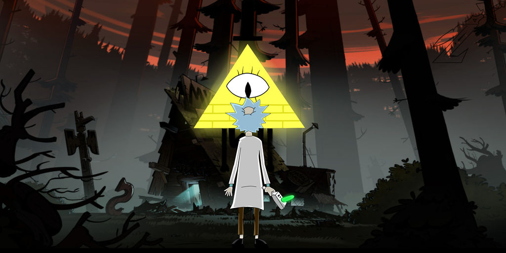

The New York Times "Cada vez que me piden que explique el atractivo de Rick y Morty, propongo un experimento mental." Decider.com  "Eso es esencialmente lo que son Gravity Falls y Rick and Morty , vías para que estos dos creadores expresen su brillante rareza. En esa misma entrevista, Hirsch dijo que querían "abusar salvajemente" de ese poder"